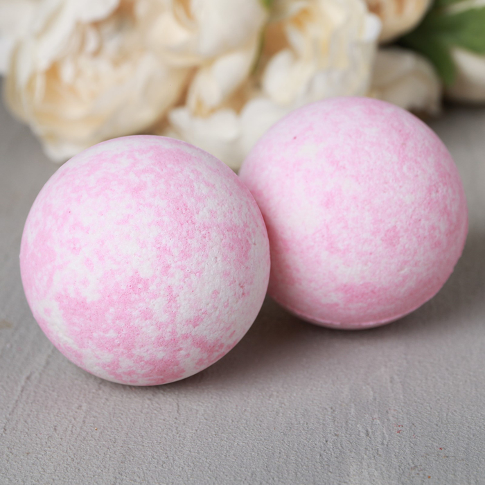

Бомбочка для ванны был изобретен в 1989 году соучредителем Lush Cosmetics Мо Константином.
Работая из своего сарая в Дорсете, Константин был вдохновлен на создание «Аква-шипящих паров» (которые позже стали «Бомбами для ванн»)
после того, как был заинтригован таблетками Алка-Зельцера.
